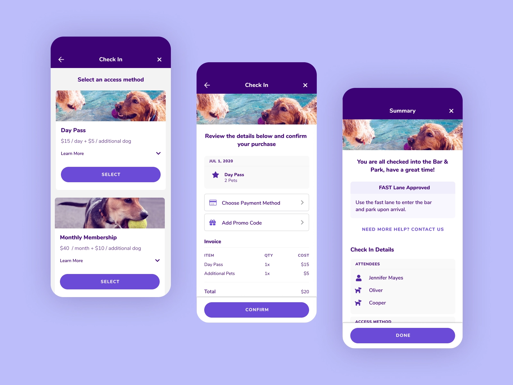
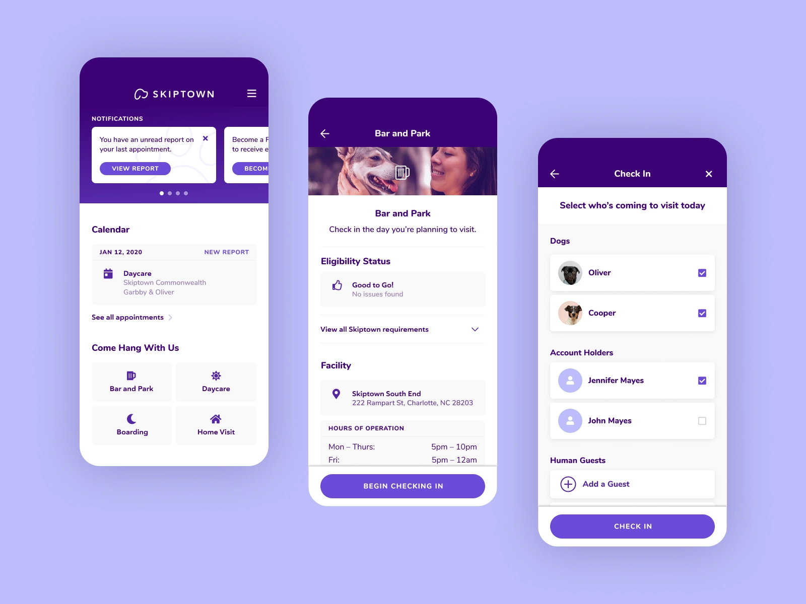
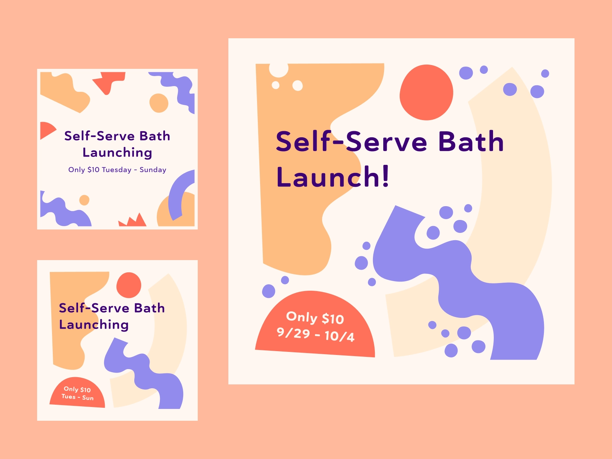
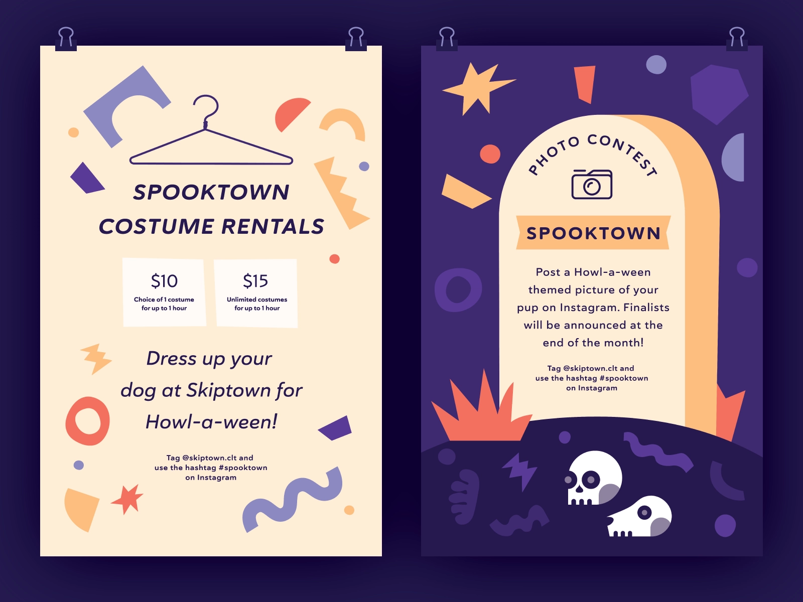
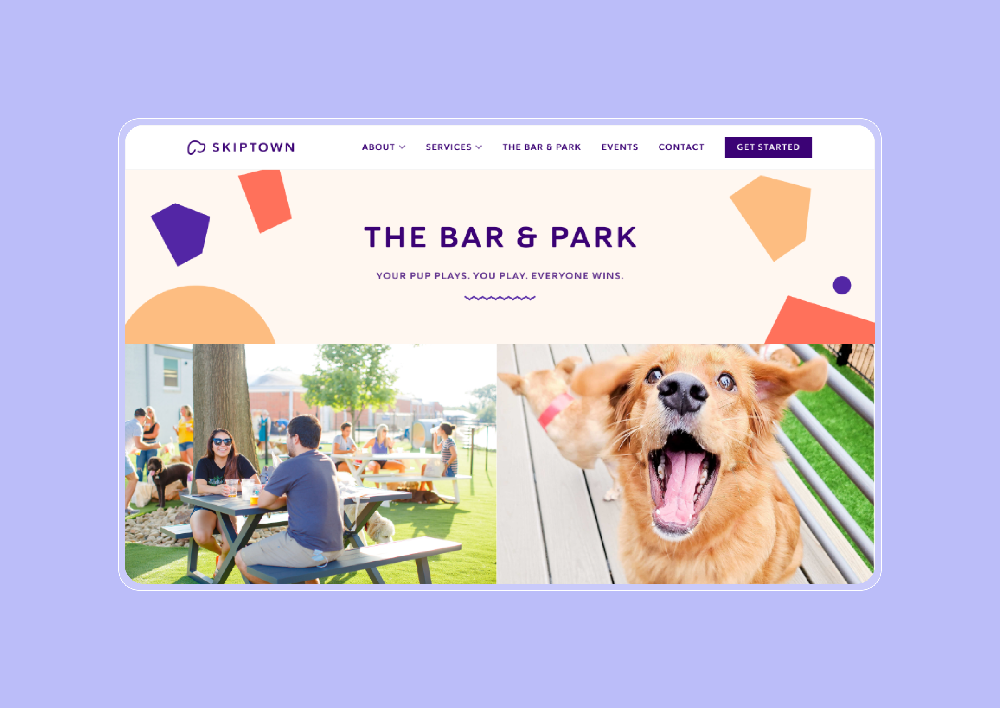

Product Design · Consumer App · 2020 — 2021
A first-class experience
for dogs & people

Overview
Tech-enabled dog daycare, launched from the ground up
Skiptown is a tech-enabled hub for dogs and their people, offering first-class dog daycare and pet services. I joined the team as they were launching their first physical location in Charlotte and led the design effort for their customer-facing mobile app and internal team management portal.
In addition to the product design work, I also helped support their marketing functions and established the Skiptown brand guidelines — shaping the visual identity of the company from its earliest days.
Process
Designing for trust, delight, and speed
Dog owners are emotionally invested in their pets. The app needed to feel trustworthy and transparent — giving people peace of mind about their furry family members — while also being fast and frictionless to use on a rushed morning drop-off.
01
Consumer App
Led design of the customer-facing mobile experience for booking, check-ins, dog profiles, and real-time updates for owners.
02
Team Portal
Designed the internal management portal used by Skiptown staff to coordinate scheduling, dog care, and daily operations on-site.
03
Brand System
Established Skiptown's brand guidelines — visual identity, typography, color, and tone — to set the company's creative foundation.




